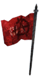
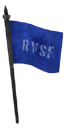
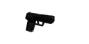
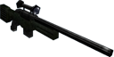
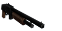
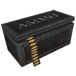
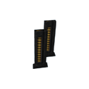
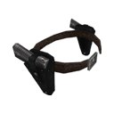
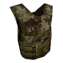
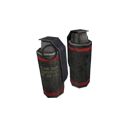

The Game
Story
Well, there is no story. Bascially this game is about these two teams fighting each other:
The Cubers Liberations Army (CLA)

Little is known about the goals and motivation of this small but feared Terrorist group. Their activities are
as diverse as their members. With ex-military, anarchists, religious fanatics, conspiracy theorists, hippies
stuck tripping, free© software fanatics™, or simply severely mental disordered persons or bored youngsters, this organization is a
pool for radicals from across the globe. Their operations range from simple annoyances (such as introducing
large amounts of mariuana-smoke into the air conditioners of offices or malls) to well planned gruesome
bombings, choosing civilians as well as politicians, lobbyists or religious leaders and their staff as
targets. “Terror for the sake of terror, for you all suck!” seems to be their motto.
The Rabid Viper Special Forces (RVSF)

An elite group of armed special forces, but not the kind you´d expect. These guys are battle worn fighters
and mercenairies, who might have been just a little too trigger happy and up for glory to fit into any other
kind of elite squad. Not suitable where lives are to be spared and private or public property to remain
unharmed. The backrounds and funders of this extravagant task-force remain well concealed, for obvious
reasons. Their primary targets are highly unpredictable terrorists and organized criminals such as the CLA
where intelligence, infiltration and stealth would be just a waste of time. “First shoot, then ask
questions, if anyone´s left to ask” is the primary approach to their job.
Controls
This is the default controls setting:
| W | Move forward |
| S | Move backwards |
| A | Sidestep left |
| D | Sidestep right |
| Space | Jump |
| R | Reload |
| T | Chat and Console |
| Left Mousebutton | Attack |
| Right Mousebutton | Use scope (if you have the sniper rifle equipped) |
| Mousewheel | Cycle weapons |
| 1 | Primary weapon |
| 2 | Pistol |
| 3 | Grenade (if available) |
| 4 | Knife |
You can also assign custom keys to specific weapons. Just modify the config/autoexec.cfg accordingly. Example:
bind e "secondary"
bind c "melee"
bind q "grenade"
You will find suggestions for more ergonomical key setups in this config file.
Weapons
There are seven weapons you can use to frag your enemies:
 |
Swiss Tech Combat Blade DR-88 A sharp and swift blade. Your last ressort when you ran out of Ammo and your best friend in humiliating snipers and campers. |
|  |
Mk-77 Semi-Automatic Pistol You basic sidearm. A powerful resort weapon, yet typically less effective at range. The small clip size is something you need to keep an eye on. |
 |
MTP-57 Assault Rifle The large caliber deals a substantial amount of damage. A long barrel ensures accuracy even at high range. It can become difficult to control when shooting bursts of more than three bullets. |
|  |
Precision Tech AD-81 Sniper Rifle Semi Automatic Sniper rifle, equipped with a 2x Scope. The large caliber can do a frightful amount of damage. Though naturally most accurate when used with the scope, the highly ergonomic design allows the experienced shooter to operate it from the hip as well. |
 |
A-Ard 10 Submachine Gun This one releases a deadly spray of bullets at a high rate of fire. However, due to the short barrel and small caliber, it´s manstopping power is limited, and effectiveness ceases at longer ranges. |
|  |
V-19 Combat Shotgun 8-round semi-automatic shotgun. This powerful weapon can shred your opponents to pieces- if you´re close enough. |
 |
SAL-T3 Grenade This grenade is your friend in mid range fights. Its timer is adjusted to two seconds which makes it quite useful for quick responses to your enemies fire bursts. |
| weapon | damage | attackdelay | RPS | dmg/sec | reload | magsize | base | max |
| Swiss Tech Combat Blade DR-88 | 50 | 500ms | 2 | 100 | - | - | - | - |
| Mk-77 Semi-Automatic Pistol | 20 | 170ms | 5.9 | 118 | 1400ms | 8 | 32 | 80 |
| MTP-57 Assault Rifle | 20 | 130ms | 7.7 | 154 | 2000ms | 20 | 60 | 80 |
| Precision Tech AD-81 Sniper Rifle | 72 | 1500ms | 0.6 | 48 | 1950ms | 5 | 20 | 20 |
| A-Ard 10 Submachine Gun | 17 | 80ms | 12.5 | 213 | 1650ms | 30 | 60 | 120 |
| V-19 Combat Shotgun | 120 | 1000ms | 1 | 120 | 2400ms | 7 | 28 | 28 |
| SAL-T3 Grenade | 150 | 1200ms | 0.8 | 125 | - | - | 0 | 2 |
Every player spawns with three weapons. Knife an pistol are the standard outfitting of every player, grenades must be picked up. You can chose the primary weapon you want to use in the outfit menu (hotkey b). The next time you spawn, you will be given the primary weapon you chose.
Items
There is a bunch of important items you can collect during the game:
|  |
Ammobox This box supplies with ammo for the primary guns. The exact content:
It respawns after 4, 6 or 8 seconds, depending on the number of players. |
|  |
Pistol Clips This item adds 16 bullets to your pistol. It has the same respawn behavior as the ammobox. |
|  |
Akimbo Picking this item lets you shoot with two pistols for 30 seconds. Take advantage of the crazy fire rate. It as been reported that the respawn time is about one minute. |
 |
Health This sweet health pack cures your damaged body with 33hp. The respawn time is between 10 and 20 seconds, depending on the number of players. |
|  |
Kevlar This one adds armour (50) to your equipment. The kevlar absorbs 30% of all damage and respawns every 20 seconds. |
|  |
Grenade Pick this to get two grenades into your pocket. |
Gamemodes
ActionCube offers seven different game modes. You can vote for one of them using the menu: Press ESC and navigate to Multiplayer ⇒ Vote.-
Team Deathmatch (0)
Two teams fight each other. The team team that has the most frags at the end of the round will win. -
Team Survivor (4)
Round based team combat. If you die, you will have to wait until the end of the round until you can spawn again. Once all members of a team are dead, the surviving team will be awarded a point and the next round will start. -
Last man Standing (3)
Round based combat, no teams. The surviving player will win the round and be awarded a point. -
Deathmatch (2)
no teams, everyone for himself :P -
Capture the Flag (5)
Steal the enemy team`s flag and bring it back to your base to score. Note, there is a special HUD for the ctf mode. -
Pistol Frenzy (6)
Pistol-only deathmatch. -
Last Swiss Standing (9)
Survive the battle with the help of your knife.